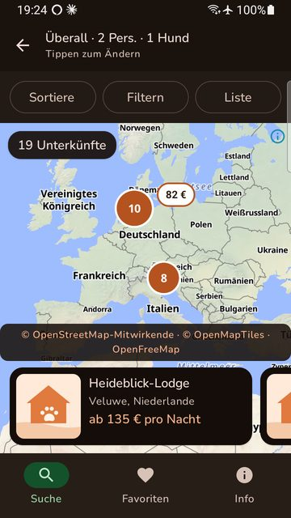
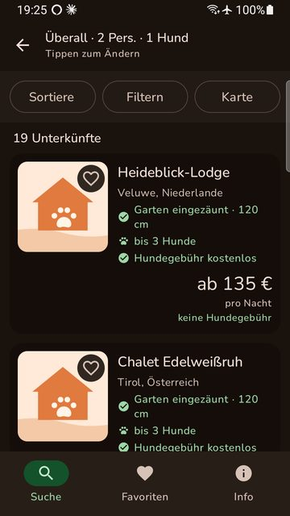

Stand: Die App ist in Entwicklung und läuft derzeit als Testversion für Android.
Was die App macht
Pawliday zeigt dir Ferienhäuser, in denen Hunde willkommen sind, alle an einem Ort. Du suchst nach Land, Region, Zeitraum, Personen und Hunden.
Dann filterst du so genau, wie es bei Hunden nötig ist, ähnlich wie bei großen Buchungsseiten, nur für Hunde:
- eingezäunter Garten und Zaunhöhe
- Hundegebühr
- Hunde des Gastgebers vor Ort
- ganze Unterkunft für euch allein
- Hundegröße
- Näpfe und Hundebett
- Tierarzt, Zoofachgeschäft und Badeplatz in der Nähe
- ebenerdig
- barrierefrei
- Assistenzhund willkommen
Die Treffer zeigst du als Liste oder auf der Karte. Favoriten speicherst du auf deinem Gerät.


So verdient Pawliday Geld
Pawliday ist ein Vermittler, keine Buchungsplattform. Gebucht wird direkt beim Anbieter. Der Mietvertrag kommt nur mit ihm zustande.
Die Links zu den Anbietern sind in der App als „Werbelink“ gekennzeichnet. Buchst du darüber, erhält Pawliday eventuell eine Provision. Dein Preis bleibt gleich.
Ein Teil der Unterkünfte stammt aus OpenStreetMap. Für diese gibt es keine Provision, ihre Links führen zur Website des Gastgebers.
Preise, Hundegebühren und Ausstattung kommen von den Anbietern. Maßgeblich sind die Angaben beim Anbieter.
Datenschutz kurz
Kein Konto, kein Tracking, keine Werbe- oder Analyse-SDKs. Deine Favoriten bleiben auf deinem Telefon.
Kontakt
Fragen, Fehler, Ideen: apps@bertramplischke.de